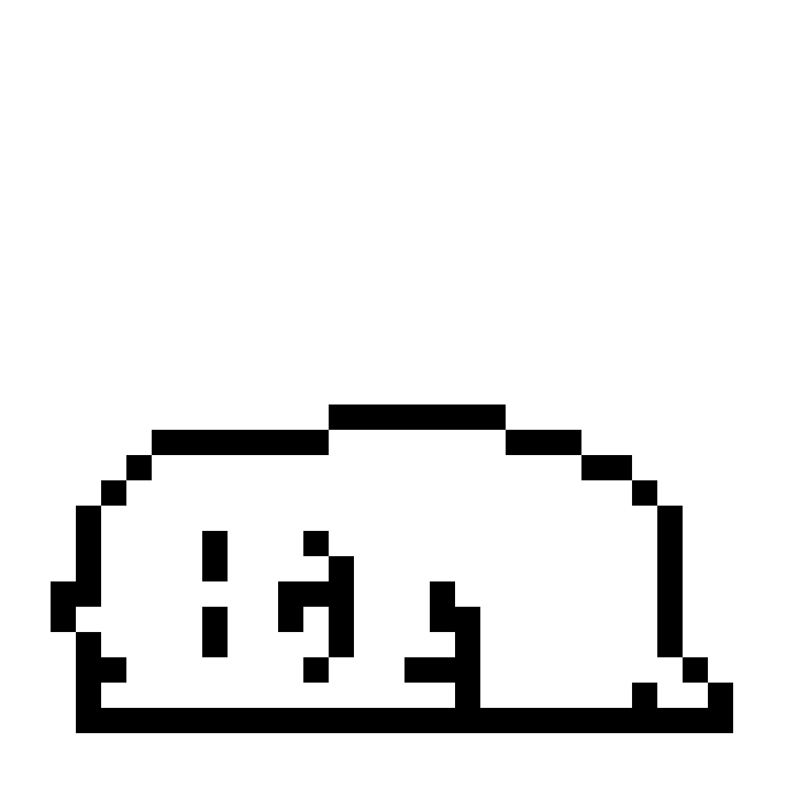
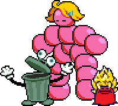

* A really cool box indeed
* Beware of a fox named Toby

↑↑↑ This is Toby the fox. He is the creator of Undertale & Deltarune
* Nubert
* "Everybody loves me."
* Trashy Trio

* That nubert has a spiky yellow hair
Chapter 1: The Beginning
Kris and Susie fall into the first Dark World inside the school supply closet. They meet Ralsei, who explains the prophecy of three heroes destined to seal Dark Fountains to prevent a catastrophe called the Roaring.
Chapter 2: A Cyber's World
A new Fountain appears in the library computer lab. Kris, Susie, and Ralsei enter Cyber World and meet Queen, who wants Noelle to help create more Fountains.
Chapter 3: Late Night
This chapter takes place in a Dark World formed inside Kris' living room, themed around television and entertainment.
Chapter 4: The Prophecy
Chapter 4 centers on a Dark World connected to Hometown's church and Saturday setting that focuses on the prophecy and the lore of Deltarune.
Chapter 5: Festival Day
The long-awaited festival in Hometown finally arrives. The dark world takes place in Asgore's flower shop with beautiful scenes in the gameplay.